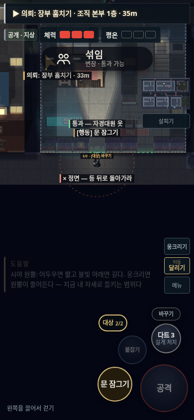
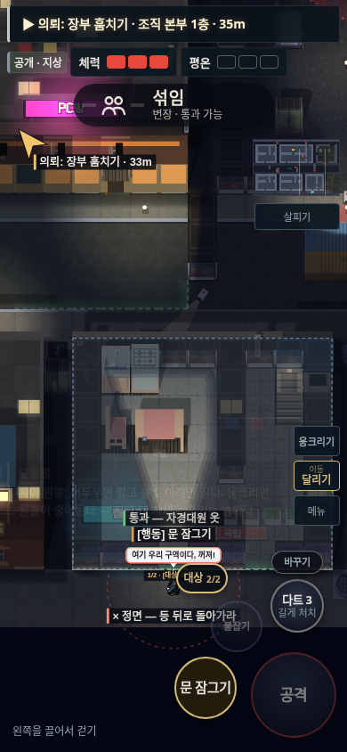

<!doctype html><html lang="ko"><meta charset="utf-8"><meta name="viewport" content="width=device-width,initial-scale=1"><title>야행 · 맵 끝 시점과 말풍선</title><style>*{box-sizing:border-box}body{margin:0;background:#101317;color:#e8e5dc;font:16px/1.6 system-ui,sans-serif}main{max-width:900px;margin:auto;padding:28px 18px}h1{font-size:24px;margin:0 0 8px}p{margin:8px 0 20px;color:#bfc1bf}a{color:#ebcc83}.compare{display:grid;grid-template-columns:1fr 1fr;gap:20px}figure{margin:0}figcaption{padding:8px 0;font-weight:600}img{width:100%;height:auto;border:1px solid #34393d;border-radius:4px}footer{margin-top:24px}@media(max-width:560px){.compare{grid-template-columns:1fr}}</style><main><h1>맵 끝에서는 위쪽을 더 보여줍니다</h1><p>본부 맵 하단, 같은 좌표의 390×844 화면입니다. 말풍선 가림을 확인하기 위해 같은 NPC 대사를 표시했습니다.</p><div class="compare"><figure><figcaption>이전 · 아래 빈 공간 473px</figcaption><a href="before.png"></a></figure><figure><figcaption>수정 · 위쪽 지형을 더 표시</figcaption><a href="after.png"></a></figure></div><footer><p>세력 NPC는 경계 밖으로 이동할 수 있습니다. 길이 없는 추적은 멈추고 원래 동선으로 돌아갑니다. 버튼과 미니맵 위치는 그대로입니다.</p><a href="../?v=88">게임 실행 · v88</a></footer></main></html>